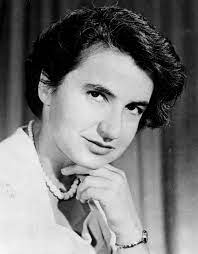

Rosalind Franklin
Rosalind Elsie Franklin (Londres, 25 de julho de 1920 – Londres, 16 de abril de 1958) foi uma química britânica que contribuiu para o entendimento das estruturas moleculares do DNA, RNA, vírus, carvão mineral e grafite. Embora seus trabalhos sobre o carvão e o vírus tenham sido apreciadas em sua vida, suas contribuições para a descoberta da estrutura do DNA tiveram amplo reconhecimento póstumo.
Franklin é mais conhecida por seu trabalho com imagens da difração de raios-X do DNA, particularmente pela foto 51, enquanto trabalhava no King's College, em Londres, que levou à descoberta da dupla hélice do DNA, da qual James Watson, Francis Crick e Maurice Wilkins compartilharam a Prêmio Nobel de Fisiologia ou Medicina em 1962. Watson sugeriu que seria ideal que Franklin fosse premiada com um Prêmio Nobel de Química, juntamente com Wilkins, mas o Comitê Nobel não faz indicações póstumas.
Depois de terminar seu trabalho com DNA, Franklin liderou o trabalho pioneiro em Birkbeck sobre as estruturas moleculares dos vírus. Aaron Klug, membro da sua equipe, continuou sua pesquisa, ganhando o Prêmio Nobel de Química em 1982.